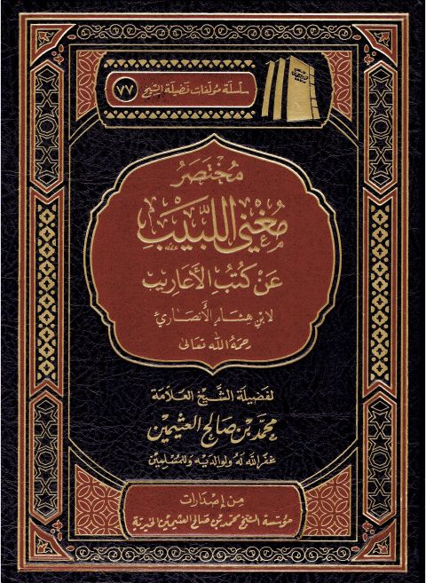

Downloads need an internet connection.
مختصر مغني اللبيب عن كتب الأعاريب لابن هشام الأنصاري
Authors: محمد بن صالح العثيمين
Publishers: مؤسسة الشيخ محمد بن صالح العثيمين الخيرية
▫️ العنوان: مختصر مغني اللبيب عن كتب الأعاريب لابن هشام الأنصاري ▪️ المؤلف: #محمد_بن_صالح_العثيمين ▫️ الناشر: #مؤسسة_الشيخ_محمد_بن_صالح_العثيمين_الخيرية ▪️ تاريخ النشر: 1444هـ 2023م ▫️ بلد النشر: القصيم، #السعودية ▪️ الطبعة: 7 ▫️ عدد الأجزاء: 1 ▪️ الصفحات: 177 ▫️ نوع الوعاء: #كتاب ▪️ التصنيف الرئيسي: #اللغة_العربية ۪